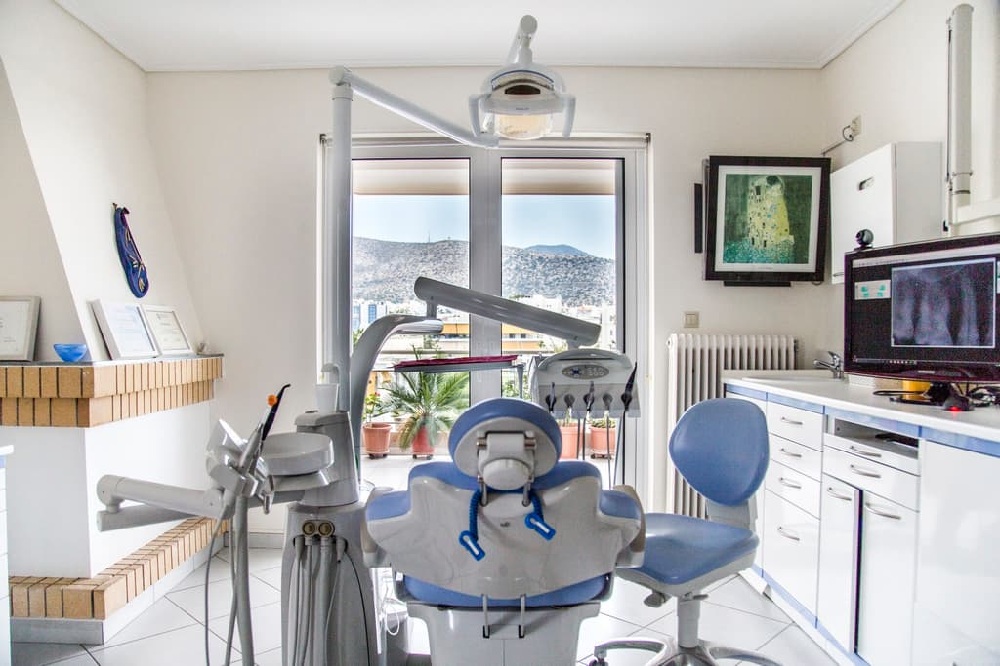
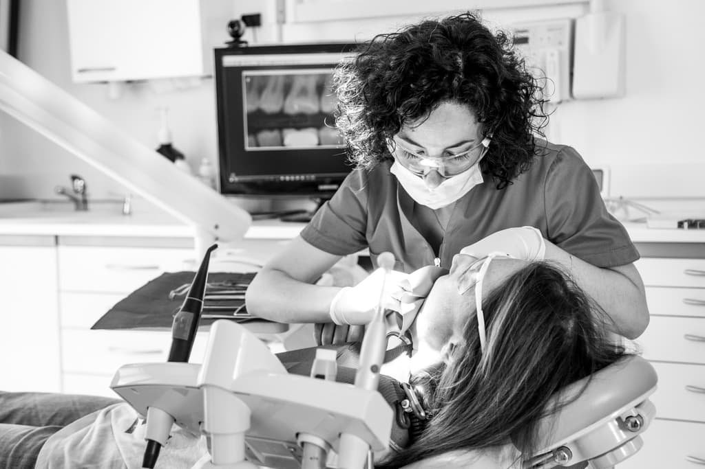
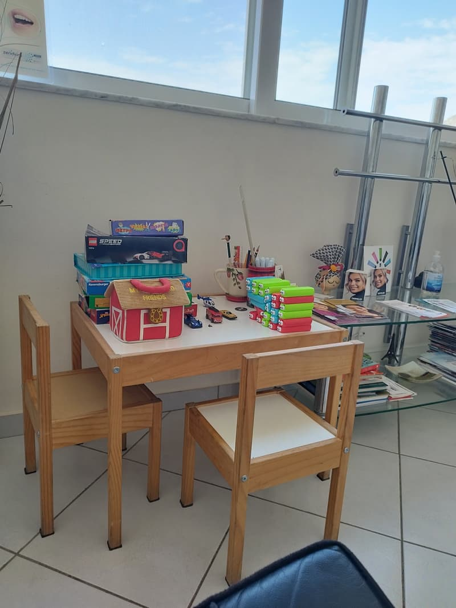

Γενική & Προληπτική Οδοντιατρική
Τακτικός έλεγχος, καθαρισμός, σφραγίσματα και εξατομικευμένες οδηγίες στοματικής υγιεινής για υγιή δόντια σε βάθος χρόνου.
με τη Νίκολα Παπαγεωργοπούλου
Οδοντιατρείο στην Αργυρούπολη
Σύγχρονη, ανώδυνη οδοντιατρική για όλη την οικογένεια — από την πρώτη επίσκεψη του παιδιού σας έως τα εμφυτεύματα και το Invisalign, με μια ομάδα εξειδικευμένων ιατρών κάτω από την ίδια στέγη.
Η «κυρία Νικολίτσα» των μικρών ασθενών — από το 2008 στην Αργυρούπολη.
Το ιατρείο
Η Νίκολα Παπαγεωργοπούλου είναι Χειρουργός Οδοντίατρος, απόφοιτος του ΕΚΠΑ, με πολυετή κλινική εμπειρία που ξεκίνησε από τη θητεία της στο Γενικό Νοσοκομείο Αθηνών και τη συνεργασία της με το πρότυπο κέντρο Dental Place του Δρ. Νίκου Κρόμπα.
Από το 2008 διατηρεί το σύγχρονο ιατρείο της στην Αργυρούπολη, εξοπλισμένο με ενδοστοματικό scanner και ψηφιακή ακτινογραφία για ακριβείς και ανώδυνες θεραπείες. Ως μητέρα, η «κυρία Νικολίτσα» των μικρών ασθενών έχει δημιουργήσει έναν ειδικό παιδικό χώρο, ώστε η επίσκεψη στον οδοντίατρο να είναι μια ευχάριστη και οικεία εμπειρία για όλη την οικογένεια.
Υπηρεσίες
Κάθε θεραπεία γίνεται από τον ιατρό με την αντίστοιχη εξειδίκευση, με σεβασμό στον χρόνο και την άνεσή σας.
Τακτικός έλεγχος, καθαρισμός, σφραγίσματα και εξατομικευμένες οδηγίες στοματικής υγιεινής για υγιή δόντια σε βάθος χρόνου.
με τη Νίκολα Παπαγεωργοπούλου
Ήπια, παιχνιδιάρικη προσέγγιση και ειδικά διαμορφωμένος παιδικός χώρος, ώστε τα παιδιά να νιώθουν άνετα και να συνεργάζονται.
με τη Νίκολα Παπαγεωργοπούλου
Σταθερή, φυσική αποκατάσταση χαμένων δοντιών με σύγχρονα συστήματα εμφυτευμάτων και προσεκτικό σχεδιασμό.
με τη Ν. Παπαγεωργοπούλου και τη Δρ. Μ. Μπατέλη
Λεύκανση, όψεις και αισθητικές αποκαταστάσεις για ένα φωτεινό, φυσικό χαμόγελο που σας ταιριάζει.
με τη Ν. Παπαγεωργοπούλου και τη Δρ. Μ. Μπατέλη
Διαφανείς νάρθηκες Invisalign και σύγχρονες ορθοδοντικές μέθοδοι για παιδιά και ενήλικες — συνωστισμός, σταυροειδής σύγκλειση, πρόληψη.
με τη Δρ. Αγγελική Καραγκιολίδου
Πρόληψη και θεραπεία ουλίτιδας και περιοδοντίτιδας, καθώς και χειρουργική στόματος, για υγιή ούλα και σταθερά δόντια.
με τη Δρ. Μαρία Μπατέλη
Απονευρώσεις, επαναλήψεις και μικροσκοπική ενδοδοντία για τη διάσωση του φυσικού σας δοντιού, χωρίς πόνο.
με τη Μαρία Μάρκου
Στεφάνες, γέφυρες και όψεις που αποκαθιστούν με ακρίβεια τη λειτουργία και την αισθητική του χαμόγελου.
με τη Δρ. Μαρία Μπατέλη
Ενδοστοματικό scanner και ψηφιακή ακτινογραφία: ακριβέστερη διάγνωση, λιγότερη ακτινοβολία και καθόλου άβολα αποτυπώματα.
για όλες τις θεραπείες
Η ομάδα
Συνεργαζόμαστε με καταξιωμένους ειδικούς με σπουδές και κλινική εμπειρία στην Ελλάδα, τη Γερμανία και την Ελβετία.
Χειρουργός Οδοντίατρος · Ιδρύτρια
Απόφοιτος του ΕΚΠΑ με εμπειρία στο Γενικό Νοσοκομείο Αθηνών και στο κέντρο Dental Place. Από το 2008 διατηρεί το ιατρείο στην Αργυρούπολη, με ιδιαίτερη αγάπη για τους μικρούς ασθενείς.
Περιοδοντολόγος – Προσθετολόγος
Διδάκτωρ του Πανεπιστημιακού Νοσοκομείου του Freiburg (Γερμανία), όπου διετέλεσε Επίκουρη Καθηγήτρια και Διευθύντρια κλινικής. Συνδυάζει διεθνή κλινική εμπειρία με τις πιο σύγχρονες τεχνικές.
drbateli.gr (ανοίγει σε νέα καρτέλα)Ειδικός Ορθοδοντικός
Διδάκτωρ του Πανεπιστημίου της Βέρνης (Ελβετία) με πολυετή κλινική εμπειρία σε Ελβετία και Ελλάδα. Πιστοποιημένη Silver Invisalign Provider, εξειδικεύεται στους διαφανείς νάρθηκες.
Προφίλ Invisalign (ανοίγει σε νέα καρτέλα)Χειρουργός Οδοντίατρος · Ενδοδοντία (MSc)
Κάτοχος Μεταπτυχιακού Διπλώματος Ειδίκευσης στην Ενδοδοντία από την Οδοντιατρική Σχολή του ΕΚΠΑ. Αξιοποιεί εξοπλισμό υψηλής ακρίβειας για την ανώδυνη διατήρηση των φυσικών δοντιών.
Ο χώρος μας
Ένα φωτεινό ιατρείο με θέα στο βουνό, σχεδιασμένο ώστε να νιώθετε άνετα από τη στιγμή που θα μπείτε.



Κριτικές
«Η γιατρός είναι πολύ φιλική απέναντι στα παιδιά και τα κάνει να νιώθουν άνετα και να συνεργάζονται. […] Ο χώρος αναμονής διαθέτει και έναν πολύ ωραίο παιδικό χώρο.»
«Ο χώρος ξεχωρίζει για την άψογη καθαριότητα. […] Δεν υπήρξε καμία βιασύνη· κάθε βήμα εξηγούνταν με σαφήνεια, δημιουργώντας ένα κλίμα εμπιστοσύνης και ηρεμίας.»
«Εδώ και 7 χρόνια πηγαίνω στη Νίκολα. Είναι εξαιρετική στη δουλειά της […] και δεν πονάω καθόλου. Είναι πολύ φιλική και τρομερά καθαρή.»
«Είχα ένα πολύ δύσκολο ορθοδοντικό θέμα. […] Χάρη στο Invisalign και στην εμπειρία της ομάδας, το αποτέλεσμα με ξεπέρασε.»
Καλέστε μας και θα βρούμε μαζί την ώρα που σας εξυπηρετεί.
Επικοινωνία
Τα ραντεβού κλείνονται τηλεφωνικά. Για οποιαδήποτε απορία, καλέστε μας — θα χαρούμε να σας εξυπηρετήσουμε.
| Δευτέρα | 09:00 – 20:00 |
|---|---|
| Τρίτη | 09:00 – 20:00 |
| Τετάρτη | 09:00 – 20:00 |
| Πέμπτη | 09:00 – 20:00 |
| Παρασκευή | 09:00 – 20:00 |
| Σάββατο | 09:00 – 11:00 |
| Κυριακή | Κλειστά |